Arroyo de los Patos · Traslasierra · Córdoba
Tu lugar de descanso entre el río y las sierras.
El lugar
A solo 50 metros del Río Los Sauces, Sauces de Sol es un pequeño complejo de cabañas pensado para descansar de verdad. Despertás con la vista imponente de las sierras, tomás el desayuno bajo la pérgola y pasás la siesta a la sombra de los espinillos.
Parque amplio, pileta, asador y el silencio de Traslasierra. Un entorno privilegiado para venir en pareja, en familia o con amigos —y sí, también con tu mascota.
El entorno
Verde, agua y montaña hasta donde llega la vista.
Servicios
Con reposeras y sombrilla para las tardes de verano.
Para el clásico asado argentino al aire libre.
Amplio, con árboles autóctonos y sombra natural.
Lista para que cocines como en casa.
Estacionamiento dentro del predio.
Para los momentos de descanso bajo techo.
Pérgola y galería con vista abierta a la montaña.
Tu mascota es bienvenida.
Galería
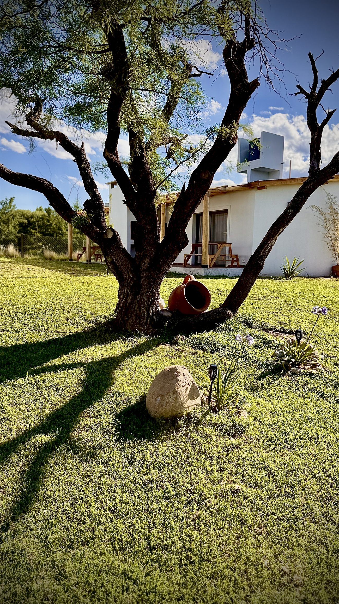
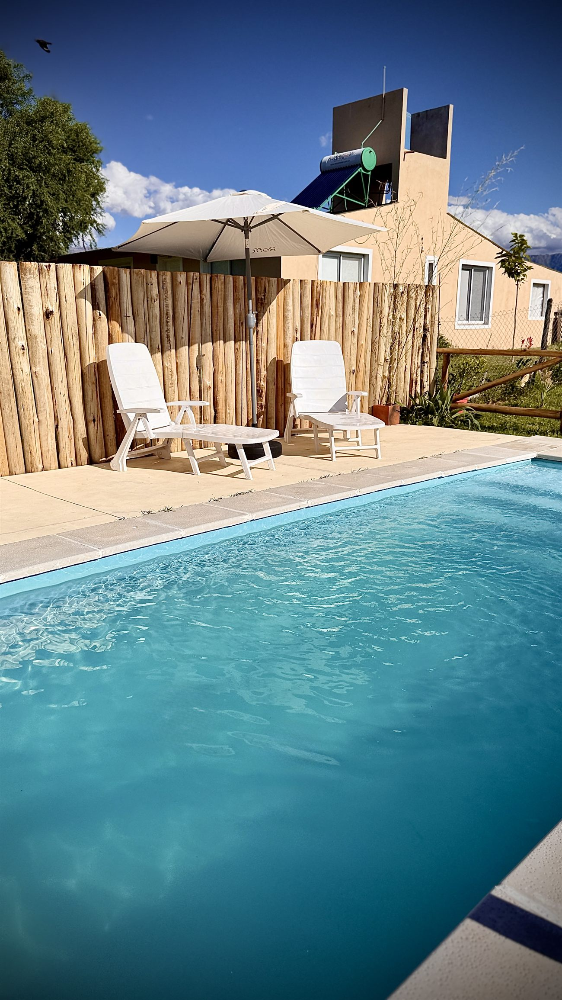
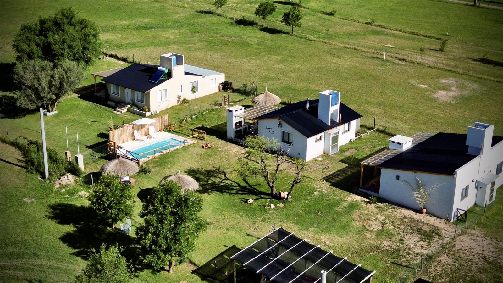
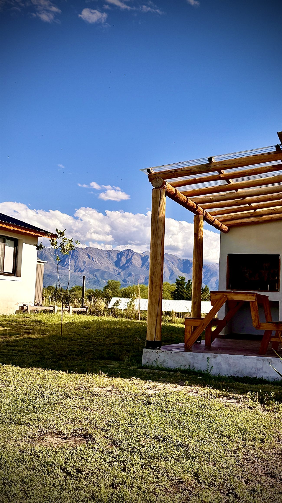
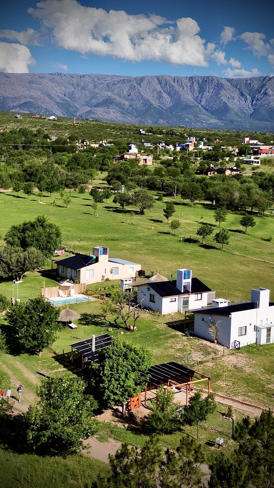
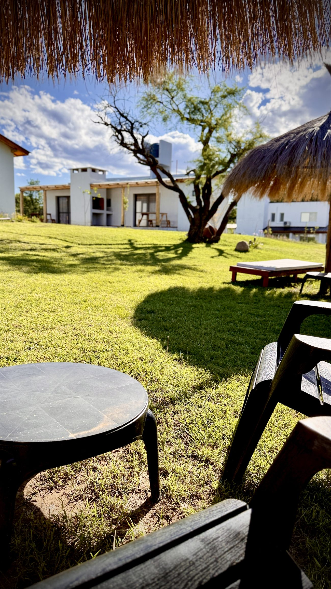
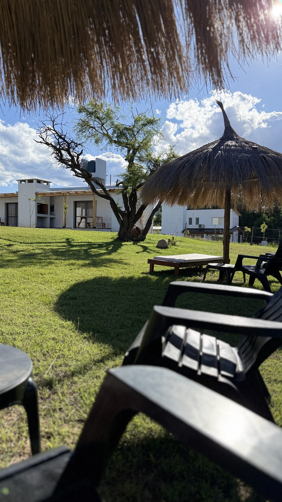
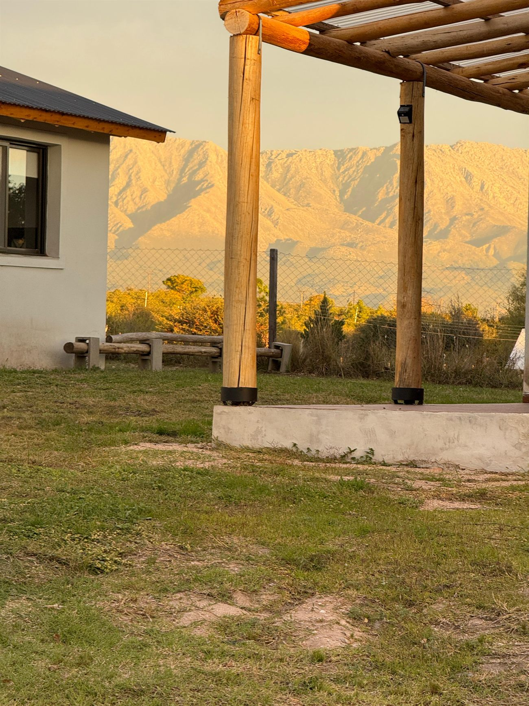
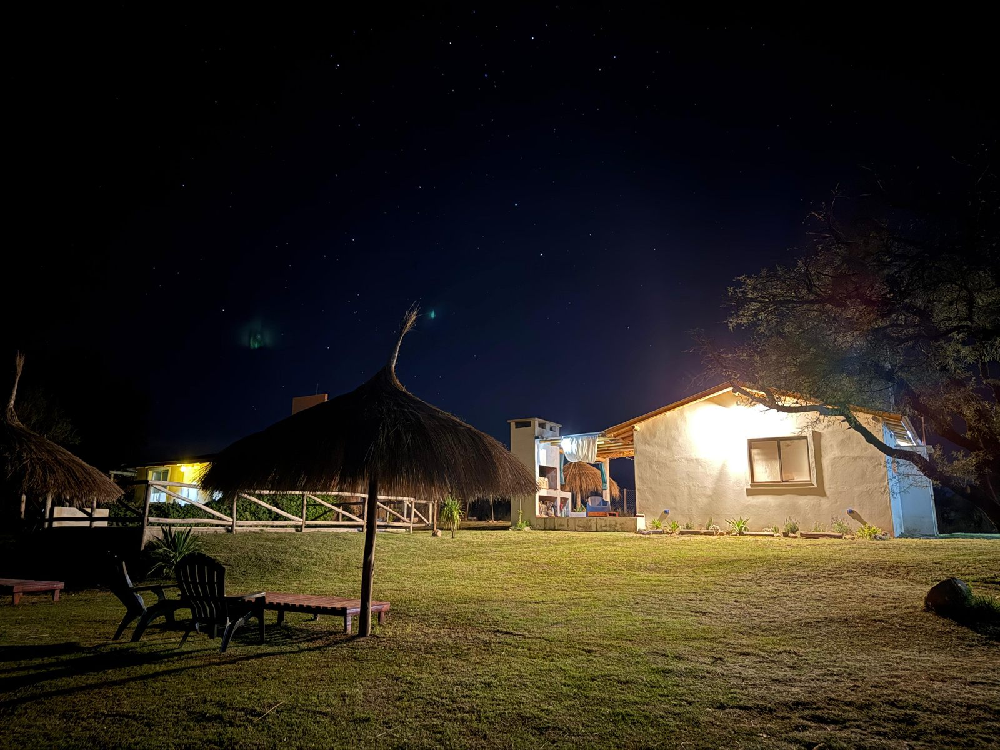
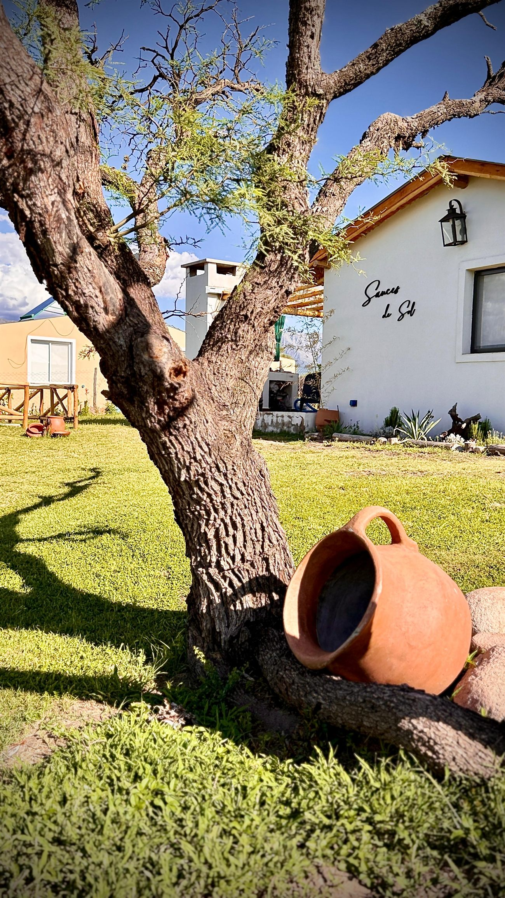
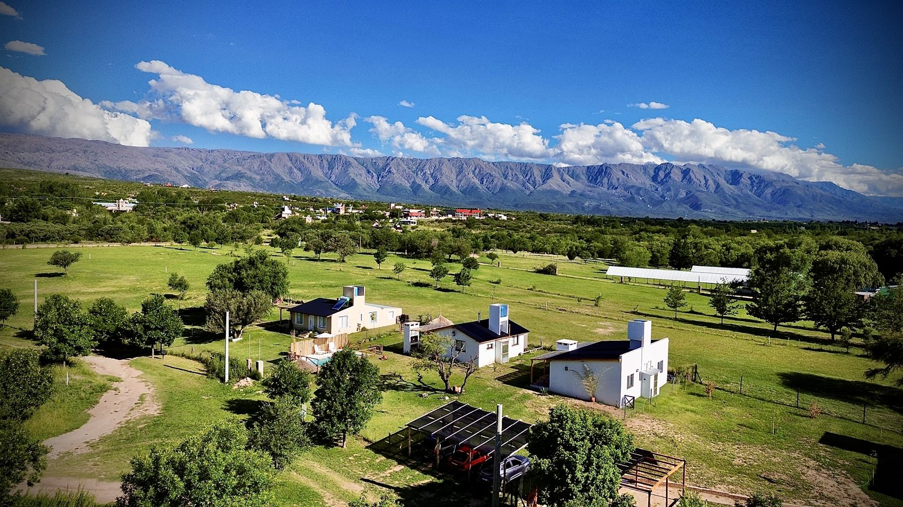
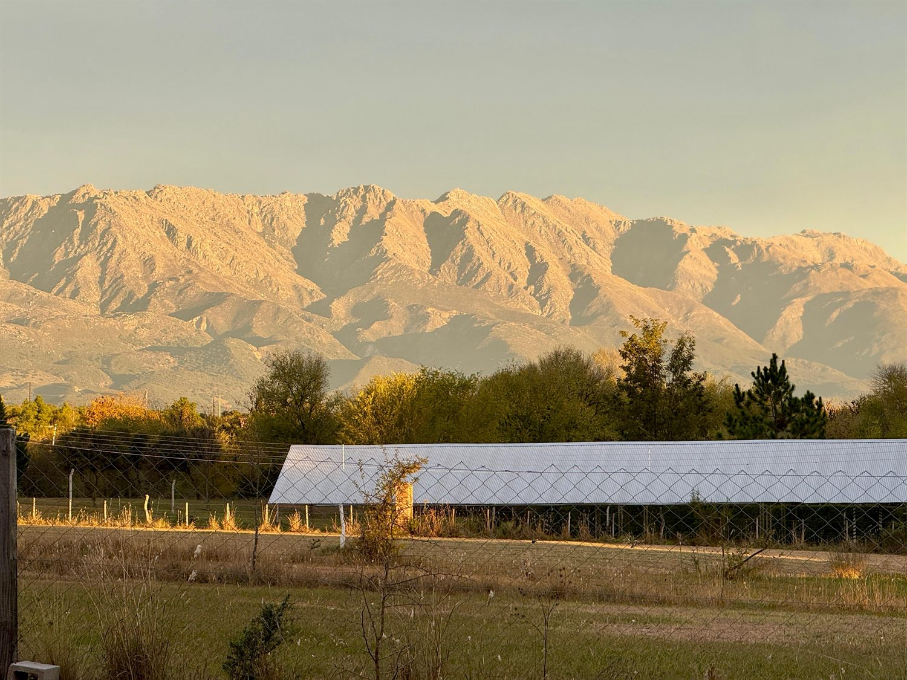
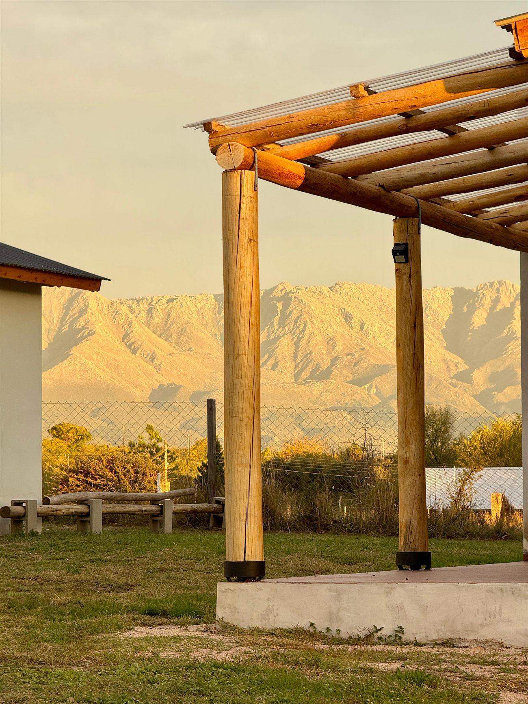
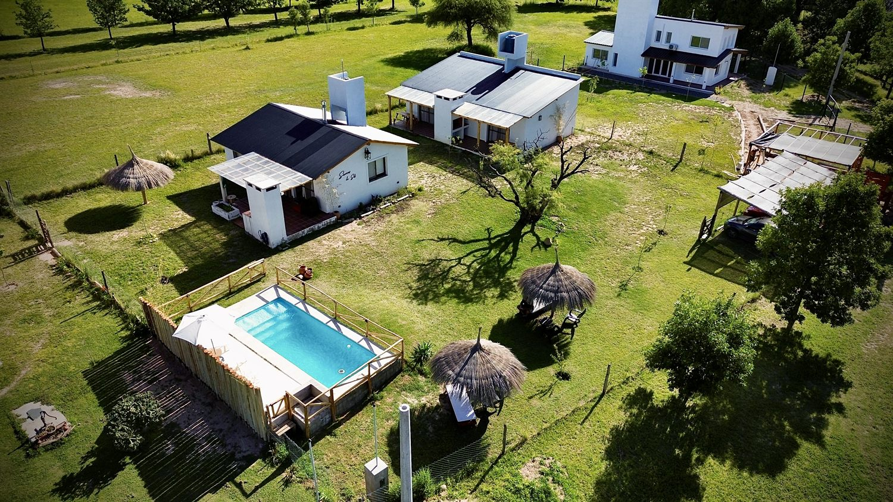
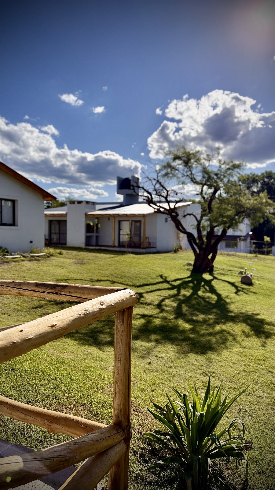
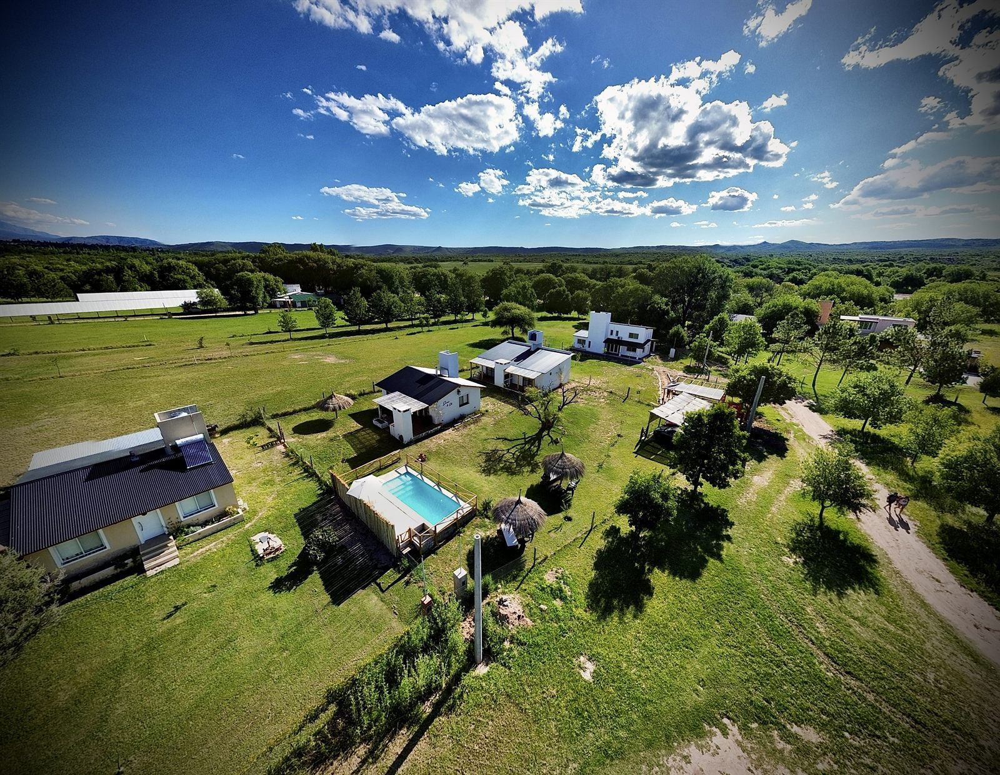
Entorno
Arroyo de los Patos es un paraje tranquilo del Valle de Traslasierra, rodeado de ríos de aguas claras y de las Sierras de Comechingones. El destino ideal para caminar, refrescarse en el río y desconectar del ruido.
Reseñas
★★★★★ 5.0 · Anfitriona verificada
"Lugar impecable, muy limpio y la anfitriona súper atenta. La vista a las sierras y estar a pasos del río lo hacen único."
— Huésped verificado
"Un descanso total. El parque, la pileta y la tranquilidad de Traslasierra son justo lo que buscábamos. Volvemos seguro."
— Huésped verificado
Reservas
Escribinos y te pasamos disponibilidad y tarifas. Coordinamos todo de forma simple y personalizada.